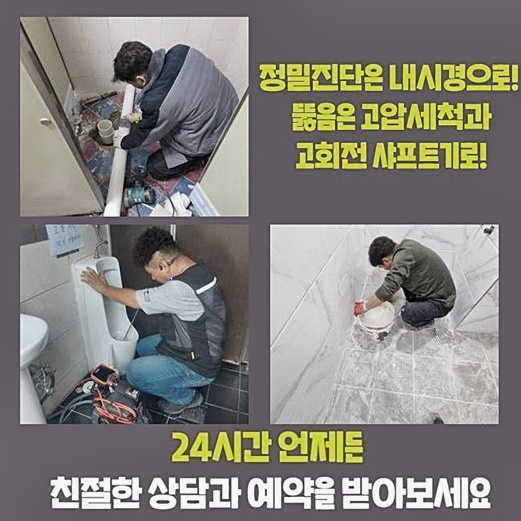
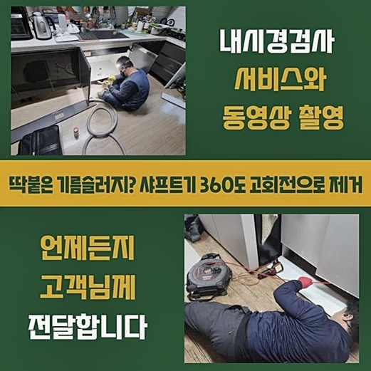
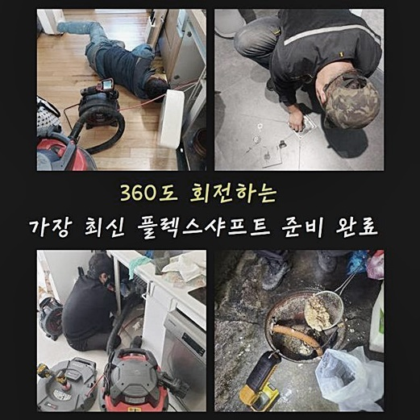
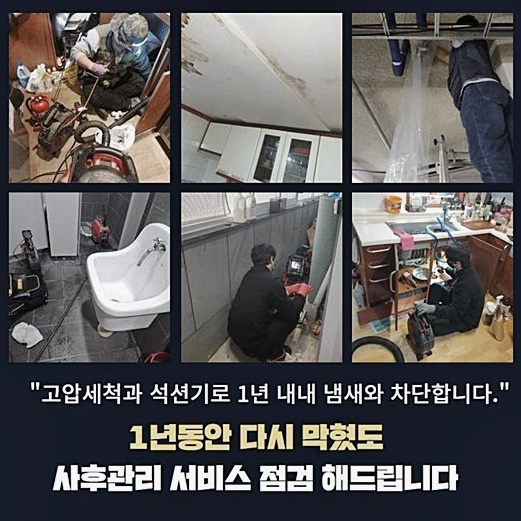
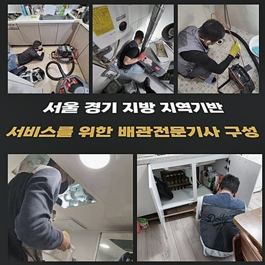
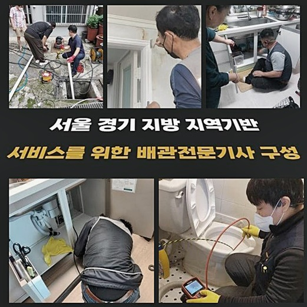

🏠 안성 사곡동하수구역류 양성면 배관뚫기 누수
용인시 처인구 배관막힘 전문 시공 후기

📋 작업 개요
- 위치: 용인시 처인구, 수원시 영통구, 화성시 동탄
- 서비스 유형: 배관막힘, 누수수리, 내시경점검
- 작업 일시:
- 업체명: 하수구수사대 (010-5615-2118)
🔍 문제 상황
안성 사곡동하수구역류 양성면 배관뚫기 누수
오늘 고치러 간 곳은 외식업에 종사하시는 고객님의 문의를 접수해서 원활하게 되돌려 드린 곳인데요
특히나 상업 시설을 경영하는 중이라면 하수관의 마비가 치명적인 불이익을 가져다 줍니다
정상적인 손님 맞이를 시도할 수 없기에 손실이 생성되기 때문에 신속하게 복구하는 대처가 핵심입니다
최근까지는 순조롭게 식당을 하고 계신 클라이언트였는데 물이 내려가지 못하고 고이는 문제로 심각한 스트레스를 호소하셨습니다
당장 오늘부터 손님이 올 시간이라 하셔서 장비를 신속히 갖춰서 요청받은 현장으로 이동했어요!
불안한 안색을 지닌 고객님의 말씀을 간략히 듣고서 문제 지점을 살펴본 결과 손대야 할 많은 것들이 곧바로 드러났습니다
사안을 명확하게 분석하려고 조리대에서 수도 밸브를 돌려봤더니 전혀 통수가 이루어지지 못하고 있는 꽉 막힌 모습이었네요
사실 꽤나 오래 전 부터 이상 증세가 눈에 들어왔지만 설마 아예 막히려나 하는 마음에 별다른 조치없니 사용하셨다고 합니다
살짝이라도 불통 징후가 은근히 내비칠 때면 곧바로 수리공에게 문의하시는 민첩함이 요구됩니다
복잡한 공사가 나아갈까봐 불안한 기색의 고객님을 침착하게 해드리려 노력하고 포인트를 면밀히 조사했습니다
다음은 무슨 수로 무리 없이 마무리해 줄 것인지에 대해서도 이어서 전달드렸습니다
식당 내의 물 배출이 좀처럼 수행되지 않으니 고인 물을 빼내려고 석션기 가동을 시작했습니다

🔎 원인 분석
💡 전문가 진단: 정밀 진단 장비를 사용하여 슬러지의 고착 여부를 판명하고 타격/세척 작업을 실시했습니다.
초반 부를 석션기로 처리해 주고 카메라를 동작시켜서 신중히 방향을 조절해서 삽입을 시도해보았어요
아무래도 확실하게 개선된 내역을 달성하려면 배관의 속을 철저히 분석하여 오류 인자를 발굴해 내야 합니다
통로가 완전 봉인됐을 때 완전하게 통로를 확보하려면 오류를 형성한 포인트를 면밀히 파악해 둬야 합니다
오랜 업력을 통해서 기술력이 최고 수준인 전문가라도 육안으로 막힌 근원부를 식별한다는 것은 사실 가능성의 희박합니다
특수로 고안된 장비들을 발동시켜서 꼼꼼하게 정밀 검토하는 절차가 기초라고 칭할 수 있겠습니다
하수구의 구멍을 통하여 카메라를 넣어보고서 어떤 물질이 도화선이 되어 막힘이 생겨난 것인지 검토했어요
더욱 깊은 영역까지 계속 스캔을 해나갔는데 침전물들이 상상 이상으로 꽉 차 있는 고착된 상황이었어요
조금의 물이라도 흘러갈 일말의 희망도 없이 거대한 몸집을 자랑했습니다
통수를 막아서고있는 대상물을 알아차리고 나서는 지금 처해있는 상황에 대해서 궁금하실 고객님을 위해서 설명을 추가했습니다
물이 흘러가야 정상일 하수관이 찝찝하게 작동되는 듯 하다면 먼저 관측 기기를 넣어서 분석하고 뚫음을 시작해야해요
그중에서도 효율적이라 생각되는 알맞은 시공을 고를 수 있으니 문제 요소를 깔끔하게 해결하는 길이 열립니다
배관 위부터 카메라를 작동시켜 나가면서 심층부의 현황까지도 빠지지 않고 찾아냈어요
성황리에 영업을 하는 식당은 기름 성분을 다량 날마다 다뤄야하는 업계 특성상 슬러지가 도화선이 되는 모습을 많이 보곤 하는데요

🔧 작업 과정
예측은 됐지만 이것만으로 무작정 착수하지 않으며 물리적인 기계를 접목하여 추정한 점을 확인하는 과정을 거쳐야만 합니다
하수관 속의 침전물들을 전적으로 이해하고 나서는 빠르게 돌아가는 샤프트로 이물을 정돈해야 했습니다
혹시 소음이 없는 관통기를 적용해선 결과물이 좋지 않냐는 의견을 내비치셨는데요
단순한 막힘이라고 보이는 현장일 경우에는 쉬운 장치만 적용해서 오류를 극복시키려고 시도를 하고 있어요
많은 현장에서 쓰이는 스프링장비는 잘 휘어지는 스프링 모양의 이 기기는 사이사이에 오염물을 고정시켜서 끌어올리는 데 성능을 내게 됩니다
그러나 내부에 고인 물질들이 강하게 말라붙어 있는 경우면 아무리 시도해도 헛돌고마니 시간낭비를 하게 됩니다
기기에 대해서도 설명하며 납득시켜 드리고 해달라고 말씀하셔서 바로 샤프트 작업을 시작하게 됐습니다
내시경 전문적인 관찰 장비를 통해서가며 배관의 속내까지도 고사양의 기기를 도달시켜 보았는데요
맨눈으론 보기 힘든 배관의 현상을 명확하게 밝히고 식별하게 해주어 누적된 오염원들을 꺼낼 수 있게 바탕을 마련하는 결정적 기구라고 할 수 있어요
이물질을 잡아 올리는 처리법을 통해서는 상황을 타개하긴 힘들겠다고 잠정적인 판단이 되어 덩어리진 물질을 잘게 깨서 잔여분 없이 쾌적한 하수구를 형성하는 게 필요해 보였어요
관로의 벽체에서 이물질들이 흔적없이 제거되지 않는다면 동일한 문제 요소가 만성화가 될 수 있기 때문에 완전무결한 수준으로 준설 시스템을 조성해야 했습니다
처음 제거장비를 구동시켰을 때만 해도 고착화된 물질이 꿈쩍하지도 않고 별다른 차도가 없는 상황으로 확인됐어요
장기간 내부에 머물러 온 부패한 물질들이 뭉쳐져서 경화되어 버렸고 공백이 있어야 할 통로가 숨쉴 틈도 없는 상태였죠
정체 상황이 나쁜 곳이라면 완수까지 시간이 훨씬 더 필요하며 힘도 더 많이 들어갑니다
그러나 도중에 그만두지 않고 모조리 삭제가 될 때 까지 샤프트 기기를 돌려서 작업을 멈추지 않았습니다
스피디하게 도는 노커가 오염물질을 잘게 부수고 고리로 걸어 올려주면서 내압을 회복시켜서 생활용수의 원만한 배수 과정을 원상태로 되돌리는 목적에 중요한 역할을 담당해요
지속적인 업무력 투입과 알맞은 장비 활용성으로 정체됐던 하수구 속이 트이기 시작했어요
시간이 갈수록 변화가 조금씩 확보되다가 막힘없는 작동과 성능을 되찾게 되어서 전반적 기능이 문제 없이 개선될 수 있었습니다
비위생적이던 썩은 오물들이 흔적 없이 제거됐음을 점검하고 통수 상태 테스트까지 마쳐봤습니다
식당 싱크대에서 물을 내려보내고 어떤지 체크해보니 초반과는 다르게 하수가 경쾌한 물소리와 함께 운반되는 상태를 여실히 느끼게 됐네요


✅ 작업 완료
막힌 것만 뚫렸다고 작업을 작업을 철수하는 게 아니고 시공 퀄리티가 양호한지도 여러 차례 점검하면서 오류를 미연에 방지합니다
또 다시 시공을 받는다면 수리 비용과 소중한 시간을 헛되게 버릴 수 있으니 귀중한 고객님의 재산을 확보하기 위해서 최선을 다하고 있습니다
이처럼 하수에 관련한 하자가 생겨난다면 어떤 곳이라고 하더라도 피해를 겪을 수 있는 일이죠
그러므로 사전에 철저하게 주기적으로 청소서비스를 받는 것이 다른 가치보다 더 값어치가 있는 활동입니다
시설물의 급작스러운 고장으로 당장 전문가의 손길이 필수적인 상황 속에 계신다면 더는 미루지 마시고 접수만 해주시면 끝납니다
맡겨주신 감사함을 가지고 휴일이라고 하더라도 밤낮없이 달려가겠습니다!



⚠️ 하수구 배관 막힘 예방 및 관리 가이드
- ✅ 머리카락, 비닐, 물티슈 등 물에 분해되지 않는 이물질은 절대 흘려보내지 마세요.
- ✅ 기름기 많은 식기는 설거지 전 키친타올로 먼저 기름때를 닦아내세요.
- ✅ 주기적으로 배수구에 뜨거운 물을 가득 부어주어 유지방 고착을 방지하세요.
- ✅ 작업 후 1년 이내 재발 시 무상 A/S 보증 서비스를 제공합니다.
💡 핵심 정리
- 확실한 장비 작업(내시경 점검 및 샤프트 스케일링)으로 원인을 뿌리 뽑습니다.
- 작업 후 1년 이내에 동일한 부위 재발 시 100% 무상 A/S 서비스를 보장합니다.
- 서울 · 경기 · 인천 전 지역에 24시간 언제든 긴급 출동할 수 있도록 항시 대기 중입니다.
❓ 자주 묻는 질문 (FAQ)
🚨 용인시 처인구 배관막힘 문제로 고민이신가요?
정확한 원인 진단과 확실한 시공으로 재발 없는 해결을 약속드립니다.
24시간 긴급 출동 | 서울 · 경기 · 인천 전지역 | 1년 내 재발 시 무상 A/S